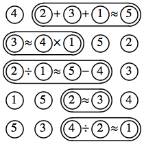
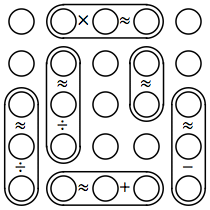
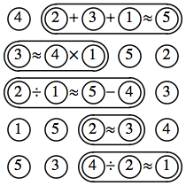
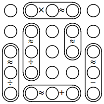
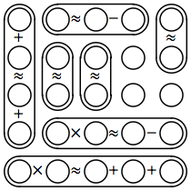
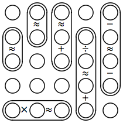
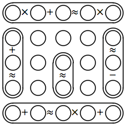
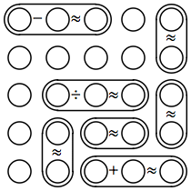
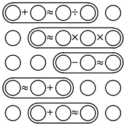

Write the digits 1 through 5 in the circles so that each number occurs once in each row and column. The horizontal and vertical equations should be approximately true: both sides will evaluate to positive integers that differ by 1. The first puzzle is solved as an example.
| 1.  | 2.
| 3.  |
| 4.  | 5.  | 6.  |
| 7.  | 8.  | 9.
|